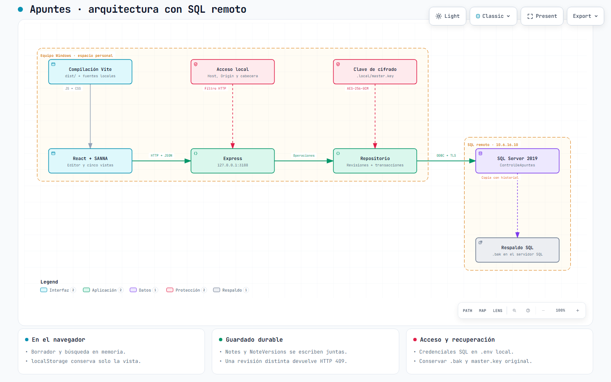
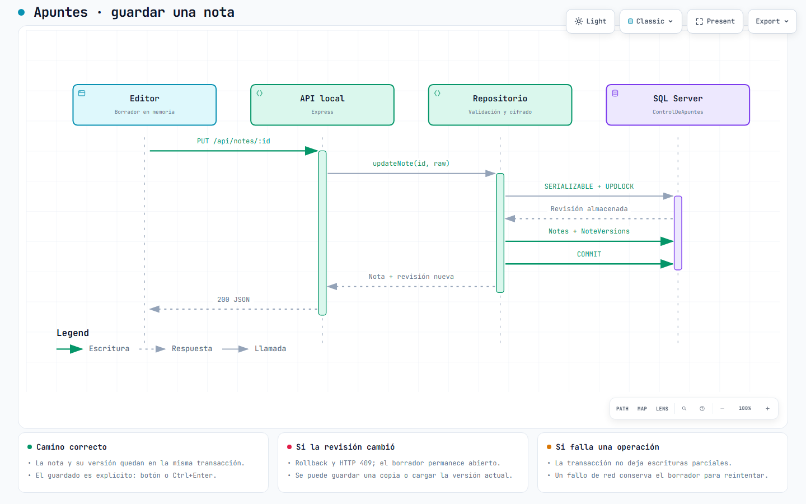
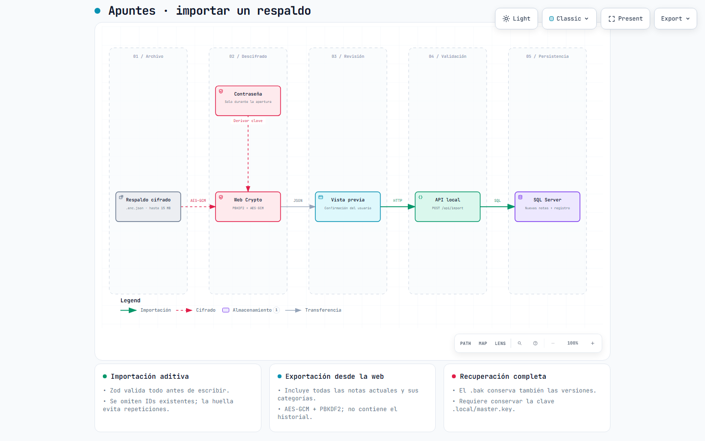

01 · ARCHITECTURE
Aplicación y SQL remoto
Interfaz y API en Windows; almacenamiento cifrado en el servidor SQL.
Explorar la arquitectura →Guía del proyecto · edición local
De una idea en el editor a una versión cifrada en SQL Server. Arquitectura, recorridos y referencias para usar, mantener y evolucionar la aplicación.
01 / Explorar
Abre cada diagrama para explorar componentes y conexiones. Los HTML son independientes y funcionan sin instalar el visor. Incluyen zoom, búsqueda, temas claro/oscuro, presentación y exportación.

Interfaz y API en Windows; almacenamiento cifrado en el servidor SQL.
Explorar la arquitectura →
Validación, revisión, escritura atómica y respuesta ante una edición simultánea.
Seguir un guardado →
Descifrado en el navegador, confirmación y entrada de notas sin reemplazar las existentes.
Recorrer una importación →El contenido está en español. Los controles fijos del visor Archify y su atributo html lang usan inglés, el idioma de respaldo de esta versión. La guía que estás leyendo sí declara español.
02 / Uso cotidiano
Ctrl+Enter; el borrador vive en memoria hasta guardarse.03 / Responsabilidades
| Capa | Responsabilidad | Fuente |
|---|---|---|
| Interfaz React + SANNA | Editor, cinco vistas, diálogos, historial y respaldos. Filtros y búsqueda se resuelven en el navegador. | App.jsx, Editor.jsx, main.jsx |
| Cliente HTTP | JSON y encabezado X-Apuntes-Client: local; expone errores de la API a la interfaz. | api.js |
| API Express | Escucha en loopback, valida Host/Origin y cliente, limita cuerpos y publica recursos de Vite. | server/index.js |
| Modelo y repositorio | Zod, SQL parametrizado, transacciones SERIALIZABLE, conflictos por revisión e historial. | model.js, repository.js |
| Cifrado y conexión | AES-256-GCM en payloads y conexión ODBC con autenticación SQL y transporte cifrado hacia 10.6.16.10. | crypto.js, db.js |
| Presentación SANNA | Componentes públicos, tokens, estilos globales y fuentes locales. Adaptaciones del consumidor acotadas en CSS. | Mapa de adopción, sanna-workspace.css |
El navegador carga el espacio de trabajo completo. localStorage conserva únicamente la preferencia de vista. No hay búsqueda SQL de texto cifrado ni sincronización en la nube.
04 / Persistencia
| Tabla | Campos y restricciones | Uso |
|---|---|---|
Categories | Id PK; Name único, 80 caracteres; Color; SortOrder. | Nombres sin distinción de mayúsculas. Al eliminar una categoría se reasignan todas sus notas y se crean nuevas versiones en una transacción. |
Notes | Id PK; CategoryId FK; Payload; Revision; CreatedAt, UpdatedAt, DeletedAt. | Última versión. Índices por categoría y actualización. Papelera mediante DeletedAt; sin endpoint de eliminación permanente. |
NoteVersions | PK compuesta (NoteId, Revision); Payload; SavedAt. FK a Notes. | Una versión por guardado, incluida la creación. La API devuelve como máximo las últimas 100; esto no elimina las anteriores. |
Imports | Hash SHA-256 PK; ImportedAt; Added; Skipped. | Idempotencia por huella del JSON recibido. También se omiten notas cuyos IDs ya existen, sin distinguir mayúsculas. |
El payload incluye título, contenido, etiquetas, tareas, estado, prioridad, fecha objetivo y flags. Se cifra antes de escribir tanto la nota como su versión.
Identificadores, nombres de categorías, colores, orden, revisiones y fechas SQL quedan visibles como metadatos. Fuente: schema.sql.
Título: 1–300 caracteres. Contenido: hasta 1 000 000. Hasta 20 etiquetas de 40 caracteres y 200 tareas de 500 caracteres; sus IDs deben ser únicos.
status: inbox / todo / doing / done. priority: none / low / medium / high. dueDate: fecha real YYYY-MM-DD o null. Fuente: model.js.
05 / Contratos HTTP
Base habitual http://127.0.0.1:3188. Todas las rutas API exigen X-Apuntes-Client: local. Las escrituras usan JSON; actualizar, enviar a papelera y restaurar requieren la revisión actual.
| Método | Ruta | Entrada / respuesta principal |
|---|---|---|
| GET | /api/health | Ejecuta SELECT 1; devuelve estado, base y motor. |
| GET | /api/workspace | { categories, notes }; incluye archivo y papelera. |
| POST | /api/notes | Campos de nota; devuelve nota creada con ID y revisión 1 (201). |
| GET / PUT | /api/notes/:id | Consultar / actualizar. PUT recibe campos de nota y revision; devuelve nota completa. |
| POST | /api/notes/:id/trash/api/notes/:id/restore | { revision }; devuelve nota con revisión incrementada. |
| GET | /api/notes/:id/history | Lista de hasta 100 versiones, orden descendente, con savedAt. |
| POST / PUT | /api/categories/api/categories/:id | { name, color, order }; crea (201) o edita una categoría. |
| PUT | /api/categories/reorder | { ids }, lista completa sin duplicados; devuelve categorías ordenadas. |
| DELETE | /api/categories/:id | { targetId }; conserva las notas en el destino y devuelve { moved }. |
| POST | /api/import | { categories, notes }; devuelve { added, skipped, alreadyImported }. |
Los errores usan { error: "mensaje" }. 400: entrada inválida; 403: cliente, origen o host rechazado; 404: recurso o ruta inexistente; 409: revisión u orden desactualizado; 413: cuerpo mayor a 15 MB; 500: fallo de operación.
El PUT valida campos completos de nota; no debe usarse como PATCH de campos aislados. El repositorio lee bajo UPDLOCK, compara revision, valida categoría, cifra y escribe Notes + NoteVersions antes del COMMIT. El 409 provoca rollback. Si se pierde la respuesta de red, el servidor podría haber confirmado: el borrador se conserva y la revisión protege el siguiente intento.
06 / Puesta en marcha
Doble clic en Iniciar Apuntes.cmd o, desde la raíz:
.\start-apuntes.ps1El lanzador usa la conexión SQL de .env, verifica la base, compila y arranca Node. Reutiliza el puerto si ya corresponde a este proyecto.
Windows, Node ≥22.12, Microsoft ODBC Driver 17 y acceso a 10.6.16.10:1433. Conserva .env y la clave original al llevar el cliente a otro equipo. Desde la raíz:
node scripts/install.js
npm run db:setup
npm run build
npm startEl instalador usa el lockfile y adapta Git SSH a HTTPS solo durante npm. Necesita acceso al repositorio del paquete SANNA.
npm run dev integra Vite y API en el mismo puerto. Producción local sirve dist/. .env.example describe el servidor, base, usuario y contraseña SQL, cifrado y puerto. La configuración activa en .env usa 10.6.16.10, ControlDeApuntes y 3188. Sin .env se conserva LocalDB como alternativa.
Para otro puerto usa npm start o npm run dev con PORT configurado; el lanzador Windows trabaja con 3188. El esquema inicial es idempotente para la creación; no sustituye un sistema de migraciones versionadas.
La comprobación HTTP siguiente consulta conectividad SQL sin leer notas. Ejecuta desde PowerShell:
Invoke-RestMethod -Uri 'http://127.0.0.1:3188/api/health' -Headers @{ 'X-Apuntes-Client' = 'local' }Si no responde, comprueba Node y el acceso de red a SQL Server por TCP 1433. Si devuelve 403, revisa Host, Origin y la cabecera. Un health correcto no prueba todos los flujos del editor ni la recuperación de backups.
07 / Respaldo y límites
Incluye todas las notas actuales, categorías, tareas, estados, archivo y papelera. No incluye versiones anteriores. Usa AES-GCM de 256 bits con PBKDF2-SHA256, 250 000 iteraciones, sal de 16 bytes e IV de 12 bytes.
Al importar, el navegador descifra con la contraseña y muestra la vista previa. Solo al confirmar envía JSON a la API local; Zod valida todo antes de la transacción. La carga agrega IDs nuevos y omite los existentes.
Hasta 15 MB de archivo en la interfaz; el cuerpo JSON de la API también tiene un límite de 15 MB. Normalización: máximo 10 000 notas y 500 categorías de entrada.
node scripts/backup-database.jsGenera un .bak mediante COPY_ONLY y CHECKSUM y ejecuta RESTORE VERIFYONLY. Con SQL remoto, el archivo queda en la carpeta de backup del servidor y el recibo en .local/backups; no se descarga al cliente. Solo en LocalDB se calcula además SHA-256 del archivo local. No se ejecuta de forma programada.
También necesitas conservar .local/master.key. El backup de SQL por sí solo no permite descifrar las notas.
VERIFYONLY valida el archivo; no equivale a una restauración completa de prueba. Fuente: backup-database.js.
La migración a 10.6.16.10 copió las cuatro tablas con verificación de huellas; no fue una restauración del .bak. El origen usaba una versión SQL más reciente que el destino. Consulta la migración y sus comprobaciones.
08 / Trazabilidad
Los tres diagramas pasan 9/9 controles showcase, sin errores ni advertencias de composición. Se comprobó contención a 1440×900, 1600×1000, 1920×1080 y 2048×1320, y se revisaron las capturas claras y oscuras. Las especificaciones JSON y los recibos SHA-256 permiten reproducir y comprobar cada entrega.
La migración pasó 24 pruebas unitarias y las 33 verificaciones de integración, estas últimas aisladas en LocalDB. La evidencia anterior incluye 13 estados de accesibilidad y 14 comprobaciones de cierre.
Las pruebas de conexión remota y de integridad están en el informe de migración; la evidencia visual anterior conserva su alcance original. Consulta sus límites y detalles en Validación de la aplicación.
npm test
npm run build
npm run test:integrationLa integración fuerza LocalDB y Edge con datos sintéticos; no crea bases de prueba en el servidor remoto.
Manifest de fuentes: rutas y huellas del código revisado. Es evidencia del checkout local, sin atribuir un commit publicado a los archivos nuevos.
Recibos de los diagramas: tipos, rutas, hashes y revisión visual.
Guía de mantenimiento: comandos para validar, entregar y revisar las visualizaciones.
Al cambiar contratos, cifrado o tablas, actualiza primero el texto y los JSON de origen; regenera con Archify. No edites los HTML generados a mano.